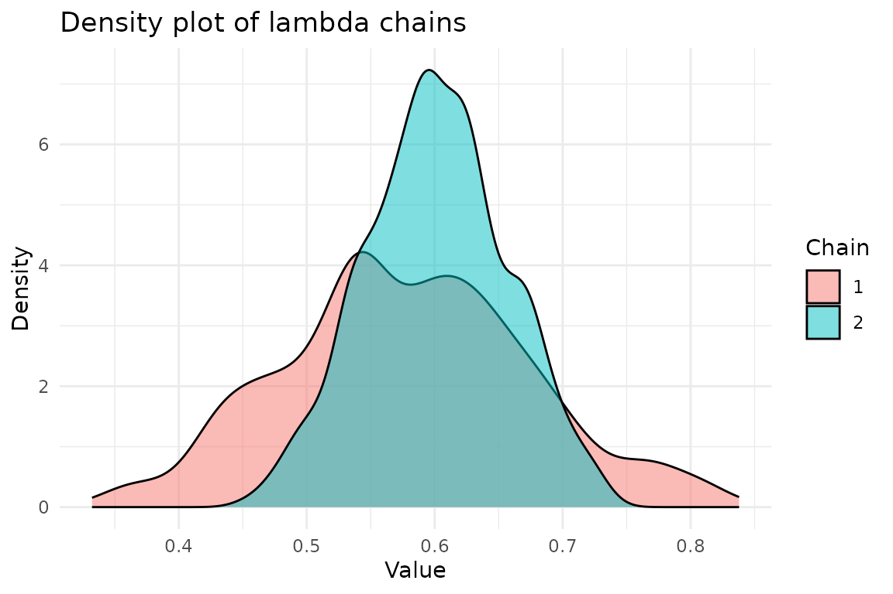

library(bayesSSM)
library(ggplot2)
library(tidyr)
library(extraDistr)
library(expm) # For matrix exponentiation
set.seed(1405)Stochastic SIR Model
We consider a stochastic SIR (Susceptible–Infectious–Recovered) model for the spread of an infectious disease in a closed population of size pop_size, meaning there are no births, deaths, or migration. The population is divided into three compartments: susceptible (S), infectious (I), and recovered (R). Initially, all individuals are susceptible except for m infectious individuals.
Note that most of the literature on SIR models assumes a deterministic model, where the compartments are treated as continuous and are described by ordinary differential equations (ODEs). Here, we instead consider a fully stochastic model, where the compartments are discrete and the transitions between compartments are governed by probabilistic rules. Especially for small populations, stochastic models can capture the inherent randomness in disease transmission and recovery more accurately than deterministic models.
Each infectious individual makes contact with any given member of the population according to a time-homogeneous Poisson process with rate \lambda/pop_size, where \lambda > 0. Thus, each infectious individual makes contact with any other individual at an overall rate of \lambda, independent of the population size.
The duration of the infectious period for each individual is assumed to follow an exponential distribution: I \sim \text{Exp}(\gamma), where \gamma > 0 is the recovery rate.
Let S(t) and I(t) denote the number of susceptible and infectious individuals at time t \geq 0, respectively. Under the assumptions above, the process \{(S(t), I(t)) : t \geq 0\} forms a continuous-time Markov process, since both infection and recovery events are exponentially distributed and are therefore memoryless. Since pop_size is fixed, we have R(t) = pop_size - S(t) - I(t), and thus the process can be described by the pair (S(t), I(t)).
Transition Rates
-
Infection Event:
(s, i, r) \to (s - 1, i + 1, r)
occurs at rate
\frac{\lambda}{pop_size} \, s \, i,
for s > 0 and i > 0.
-
Recovery Event:
(s, i, r) \to (s, i - 1, r + 1)
occurs at rate
\gamma \, i,
for i > 0.
Partial Observations and Noisy Measurements
Suppose we only observe the initial state and the number of infectious individuals I(t) at discrete time points t = 0, 1, \ldots, T. The true number of infectious individuals is unobserved (latent), and instead we observe a noisy measurement that may either overestimate or underestimate the true count.
We model the observed counts Y_t in this article using a Poisson observation model: Y_t \mid I(t) \sim \operatorname{Pois}(I(t)). To account for over-dispersion, one could instead use a negative binomial observation model.
We are now in a State Space Model (SSM) setup, where the latent state is \bigl(S(t), I(t)\bigr), and the observations are Y_t. Note that due to the memoryless property of the exponential distribution, the latent state (S(t), I(t)) is fully determined by the initial state and the sequence of infection and recovery events that have occurred up to time t, thus a Markov process.
Why Standard MCMC Methods Are Infeasible
If one wanted to use standard MCMC methods to estimate the joint posterior of the parameters and latent states, one would need to compute the exact transition probabilities for the SIR model, which quickly becomes infeasible as the number of infectious individuals increases. We illustrate how this can be done using matrix exponentiation for small populations.
The probability distribution of the state at time t is given by: matrix_exp(t) = e^{Qt}, where generator is the generator matrix of the Markov process, which contains the transition rates between states.
We define functions below to generate the state space for a small SIR system, build the generator matrix, and compute the transition probabilities at a given time t.
# Generate state space for small SIR system
generate_sir_states <- function(pop_size) {
# Returns all (s, i) pairs where s + i <= pop_size
states <- expand.grid(s = 0:pop_size, i = 0:pop_size) %>%
dplyr::filter(.data$s + .data$i <= pop_size) %>%
dplyr::arrange(.data$s, .data$i)
states
}
# Build generator matrix
build_generator_matrix <- function(states, lambda, gamma, pop_size) {
n_states <- nrow(states)
generator <- matrix(0, n_states, n_states)
for (k in 1:n_states) {
s <- states$s[k]
i <- states$i[k]
rate_infection <- (lambda / pop_size) * s * i
rate_recovery <- gamma * i
# Infection transition
if (s > 0 && i > 0) {
next_state <- c(s - 1, i + 1)
idx <- which(states$s == next_state[1] & states$i == next_state[2])
generator[k, idx] <- rate_infection
}
# Recovery transition
if (i > 0) {
next_state <- c(s, i - 1)
idx <- which(states$s == next_state[1] & states$i == next_state[2])
generator[k, idx] <- rate_recovery
}
# Diagonal: exit rate
generator[k, k] <- -(rate_infection + rate_recovery)
}
generator
}
# Compute transition probabilities at time t
compute_transition_probs <- function(lambda, gamma, pop_size, t, init_state) {
states <- generate_sir_states(pop_size)
generator <- build_generator_matrix(states, lambda, gamma, pop_size)
matrix_exp <- expm(generator * t)
init_index <- which(states$s == init_state[1] & states$i == init_state[2])
p_t <- matrix_exp[init_index, ]
data.frame(
s = states$s,
i = states$i,
prob = p_t
)
}This can then be run to compute the transition probabilities for a given state and time point. For example, if we have a population of size pop_size=5 with state (S(t), I(t)) = (4, 1) at time t, we can compute the transition probabilities for the next time point t+1 as
# Example with very small population
lambda <- 1.0
gamma <- 0.5
pop_size <- 5
t <- 1
init_state <- c(4, 1) # (s, i)
transition_probs <- compute_transition_probs(
lambda, gamma, pop_size, t, init_state
)
# Show the most probable next states
transition_probs[order(-transition_probs$prob), ][1:5, ]
#> s i prob
#> 19 4 0 0.27979546
#> 20 4 1 0.27253179
#> 18 3 2 0.14375879
#> 17 3 1 0.08872580
#> 15 2 3 0.06343076Note, that this scales poorly with larger populations, as the number of states is given by \text{pop_size}+2 \choose 2, which for pop_size=100 is already over 5000 states. Thus, this whole approach is only feasible for very small populations.
Simulate data
We will simulate data from the SIR model with the following parameters:
At t=0 we have S(0) = 90, I(0) = 10 and R(0) = 0.
Infection rate \lambda=1.5 and removal rate \gamma=0.5.
We observe the initial state at t=0 complete, and then noisy version of infectious individuals at times t=1, \ldots, 10 representing observations for each day.
We can simulate using the fact that we have two independent exponential distribution, so an event occurs at rate of the sum of the rates.
# --- Simulation settings and true parameters ---
n_total <- 500 # Total population size
init_infected <- 70 # Initially infectious individuals
init_state <- c(n_total - init_infected, init_infected) # (s, i) at time 0
t_max <- 10 # Total number of days to simulate
true_lambda <- 0.5 # True infection parameter
true_gamma <- 0.2 # True removal parameter
# --- Functions for simulating the epidemic ---
epidemic_step <- function(state, lambda, gamma, n_total) {
t <- 0
t_end <- 1
s <- state[1]
i <- state[2]
while (t < t_end && i > 0) {
rate_infection <- (lambda / n_total) * s * i
rate_removal <- gamma * i
rate_total <- rate_infection + rate_removal
if (rate_total <= 0) break
dt <- rexp(1, rate_total)
if (t + dt > t_end) break
t <- t + dt
# Decide which event occurs:
if (runif(1) < rate_infection / rate_total) {
# Infection event
s <- s - 1
i <- i + 1
} else {
# Removal event
i <- i - 1
}
}
c(s, i)
}
simulate_epidemic <- function(
n_total, init_infected, lambda, gamma, t_max
) {
states <- matrix(0, nrow = t_max, ncol = 2)
# initial state at t = 0
state <- c(n_total - init_infected, init_infected)
for (t in 1:t_max) {
state <- epidemic_step(state, lambda, gamma, n_total)
states[t, ] <- state
}
states
}Now, we generate some data:
# Simulate an epidemic dataset
true_states <- simulate_epidemic(
n_total, init_infected, true_lambda, true_gamma, t_max
)
latent_i <- true_states[, 2]
observations <- rpois(length(latent_i), lambda = latent_i)
# Display simulated data: time, susceptible, latent infectious, observed counts
print(data.frame(
time = 1:t_max, s = true_states[, 1], i = true_states[, 2], y = observations
))
#> time s i y
#> 1 1 391 88 103
#> 2 2 348 113 106
#> 3 3 307 132 114
#> 4 4 266 147 136
#> 5 5 221 164 155
#> 6 6 183 171 168
#> 7 7 155 159 154
#> 8 8 137 143 137
#> 9 9 118 139 147
#> 10 10 107 121 123And plot it:
# Function to create a tidy dataset for ggplot
prepare_data_for_plot <- function(states, observations, t_max) {
# Organize the data into a tidy format
data <- data.frame(
time = 1:t_max,
s = states[, 1],
i = states[, 2],
y = observations
)
# Convert to long format for ggplot
data_long <- data %>%
gather(key = "state", value = "count", -time)
data_long
}
# Function to plot the epidemic data
plot_epidemic_data <- function(data_long, t_max) {
ggplot(data_long, aes(x = .data$time, y = .data$count, color = .data$state)) +
geom_line(linewidth = 1.2) +
scale_color_manual(values = c("s" = "blue", "i" = "red", "y" = "green")) +
labs(
x = "Time (Days)", y = "Count",
title = "Susceptible, Infected, and Observed Counts"
) +
theme_minimal() +
theme(legend.title = element_blank()) +
scale_x_continuous(breaks = 1:t_max) +
theme(
axis.title = element_text(size = 12),
plot.title = element_text(size = 14, hjust = 0.5)
)
}
# Prepare data for plotting
data_long <- prepare_data_for_plot(true_states, observations, t_max)
# Plot the results
plot_epidemic_data(data_long, t_max)
Bayesian Inference with PMMH
We are interested in performing Bayesian inference in this setup, and define the priors as follows: \begin{align*} \lambda &\sim \operatorname{Normal^+}(0, 1^2), \\ \gamma &\sim \operatorname{Normal^+}(0, 2^2), \end{align*} where \operatorname{Normal^+} denotes a truncated at 0 normal distribution.
# Define the log-prior for the parameters
log_prior_lambda <- function(lambda) {
extraDistr::dhnorm(lambda, sigma = 1, log = TRUE)
}
log_prior_gamma <- function(gamma) {
extraDistr::dhnorm(gamma, sigma = 2, log = TRUE)
}
log_priors <- list(
lambda = log_prior_lambda,
gamma = log_prior_gamma
)We now define the initial state, transition and likelihood functions for the SIR model.
init_fn_epidemic <- function(num_particles) {
# Return a matrix with particles rows; each row is the initial state (s, i)
matrix(
rep(init_state, each = num_particles),
nrow = num_particles,
byrow = FALSE
)
}
transition_fn_epidemic <- function(particles, lambda, gamma, t) {
new_particles <- t(apply(particles, 1, function(state) {
s <- state[1]
i <- state[2]
if (i == 0) {
return(c(s, i))
}
epidemic_step(state, lambda, gamma, n_total)
}))
new_particles
}
log_likelihood_fn_epidemic <- function(y, particles) {
# particles is expected to be a matrix with columns (s, i)
dpois(y, lambda = particles[, 2], log = TRUE)
}Now we can run the PMMH algorithm to estimate the posterior distribution. For this vignette we only use a small number of iterations (1000) and 2 chains (and we also modify the tuning to only use 100 iterations with a burn-in of 10). In practice, these should be much higher.
result <- bayesSSM::pmmh(
pf_wrapper = bootstrap_filter, # use bootstrap particle filter
y = observations,
m = 1000,
init_fn = init_fn_epidemic,
transition_fn = transition_fn_epidemic,
log_likelihood_fn = log_likelihood_fn_epidemic,
log_priors = log_priors,
pilot_init_params = list(
c(lambda = 0.5, gamma = 0.5),
c(lambda = 1, gamma = 1)
),
burn_in = 200,
num_chains = 2,
param_transform = list(lambda = "log", gamma = "log"),
tune_control = default_tune_control(pilot_m = 100, pilot_burn_in = 10),
verbose = TRUE,
seed = 1405,
)
#> Running chain 1...
#> Running pilot chain for tuning...
#> Pilot chain posterior mean:
#> lambda gamma
#> 0.5317352 0.1822626
#> Pilot chain posterior covariance (transformed space):
#> lambda gamma
#> lambda 0.015968002 0.004597379
#> gamma 0.004597379 0.001364845
#> Using 50 particles for PMMH:
#> Running Particle MCMC chain with tuned settings...
#> Running chain 2...
#> Running pilot chain for tuning...
#> Pilot chain posterior mean:
#> lambda gamma
#> 0.4623588 0.1752997
#> Pilot chain posterior covariance (transformed space):
#> lambda gamma
#> lambda 0.0019022254 -2.446075e-04
#> gamma -0.0002446075 4.555458e-05
#> Using 50 particles for PMMH:
#> Running Particle MCMC chain with tuned settings...
#> PMMH Results Summary:
#> Parameter Mean SD Median 2.5% 97.5% ESS Rhat
#> lambda 0.59 0.08 0.59 0.43 0.75 39 1.089
#> gamma 0.21 0.02 0.22 0.16 0.25 15 1.082
#> Warning in bayesSSM::pmmh(pf_wrapper = bootstrap_filter, y = observations, :
#> Some ESS values are below 400, indicating poor mixing. Consider running the
#> chains for more iterations.
#> Warning in bayesSSM::pmmh(pf_wrapper = bootstrap_filter, y = observations, :
#> Some Rhat values are above 1.01, indicating that the chains have not converged.
#> Consider running the chains for more iterations and/or increase burn_in.We get convergence warnings as expected, but the posterior is still centered around the true value.
We can access the chains and plot the densities:
chains <- result$theta_chainFor \lambda:
ggplot(chains, aes(x = lambda, fill = factor(chain))) +
geom_density(alpha = 0.5) +
labs(
title = "Density plot of lambda chains",
x = "Value",
y = "Density",
fill = "Chain"
) +
theme_minimal()
And for \gamma:
ggplot(chains, aes(x = gamma, fill = factor(chain))) +
geom_density(alpha = 0.5) +
labs(
title = "Density plot of gamma chains",
x = "Value",
y = "Density",
fill = "Chain"
) +
theme_minimal()